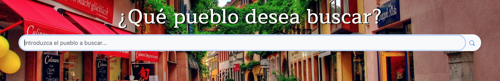
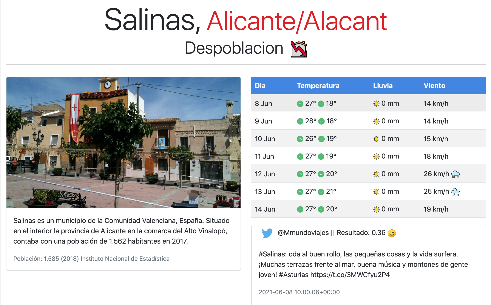

<div class="container">
  <div class="accordion my-5 pb-3" id="accordionPanelsStayOpenExample">
      <h1 class="mb-3 title">Preguntas Frecuentes</h1>
      <!-- ¿Cómo buscar un pueblo? -->
      <div class="accordion-item">
        <h2 class="accordion-header" id="panelsStayOpen-headingOne">
          <button class="accordion-button collapsed" type="button" data-bs-toggle="collapse" data-bs-target="#panelsStayOpen-collapseOne" aria-expanded="true" aria-controls="panelsStayOpen-collapseOne">
            ¿Cómo buscar un pueblo?
          </button>
        </h2>
        <div id="panelsStayOpen-collapseOne" class="accordion-collapse collapse" aria-labelledby="panelsStayOpen-headingOne"> <!-- class="show" -> muestra abierto -->
          <div class="accordion-body">
            <p>Para buscar un pueblo hay que introducir en la pestaña de <a routerLink="/pueblos">Pueblos</a> 
              el nombre del pueblo que se desee. Si el pueblo ha sido buscado este proceso no tardará nada, pero, si el pueblo no ha sido buscado por ningún usuario, 
              este proceso tardará unos segundos.</p>
            <div class="container">
              
            </div>
          </div>
        </div>
      </div>
      <!-- ¿Cómo iniciar sesion? -->
      <div class="accordion-item">
          <h2 class="accordion-header" id="panelsStayOpen-headingTwo">
              <button class="accordion-button collapsed" type="button" data-bs-toggle="collapse" data-bs-target="#panelsStayOpen-collapseTwo" aria-expanded="false" aria-controls="panelsStayOpen-collapseTwo">
              ¿Cómo iniciar sesión?
              </button>
          </h2>
          <div id="panelsStayOpen-collapseTwo" class="accordion-collapse collapse" aria-labelledby="panelsStayOpen-headingTwo">
          <div class="accordion-body">
              <div>
                  <p>Para iniciar sesión, debes navegar hasta la pantalla de 
                      <a routerLink="/authentication">Login</a> a través del menú superior, una vez allí, debes introducir tus
                  datos de correo electrónico y contraseña con los que te registraste y hacer click en el botón "Iniciar
                  Sesión".</p>
                  <!-- Modal -->
                  
                  <div class="modal fade" id="loginModal" tabindex="-1" aria-labelledby="loginModalLabel" aria-hidden="true">
                  <div class="modal-dialog">
                      <div class="modal-content">
                      
                      </div>
                  </div>
                  </div>

                  <p>En el caso de que no se tenga una cuenta deberá crearse una haciendo click en el
                  enlace "¿Aún no tienes cuenta?" y completar los campos indicados en la pestaña emegrente, una vez
                  completados, debe hacer click en el botón "Registrate" o los cambios no quedarán registrados. </p>
                  
                  <div class="modal fade" id="registerModal" tabindex="-1" aria-labelledby="registerModalLabel" aria-hidden="true">
                      <div class="modal-dialog">
                          <div class="modal-content"> 
                      </div>
                  </div>
              </div>
          </div>
          </div>
      </div>
      <!-- Detalles de la informacion mostrada en el pueblo buscado -->
      <div class="accordion-item">
        <h2 class="accordion-header" id="panelsStayOpen-headingThree">
            <button class="accordion-button collapsed" type="button" data-bs-toggle="collapse" data-bs-target="#panelsStayOpen-collapseThree" aria-expanded="false" aria-controls="panelsStayOpen-collapseThree">
                ¿Qué información se muestra al buscar un pueblo?
            </button>
        </h2>
        <div id="panelsStayOpen-collapseThree" class="accordion-collapse collapse" aria-labelledby="panelsStayOpen-headingThree">
            <div class="accordion-body">
                <p>Tras buscar un pueblo, se mostrará el nombre junto a la provincia a la que pertenece ese pueblo, y debajo una etiqueta de "Despoblación" o "No Despoblación" (junto a un icono) dependiendo de lo que nuestro modelo haya predicho. </p>
                <p>En la parte izquierda se puede ver una pequeña descripción del pueblo, junto a una imagen y el número de habitantes.</p>
                <p>Se añade una tabla con un resumen de la previsión meteorológica para la semana (Día del mes, temperatura máxima y mínima (ºC), lluvia (mm) y la velocidad del viento(km/h)). </p>
                <p>Debajo de la previsión del tiempo, se encuentra una lista de mensajes de Twitter con el nombre de Usuario y el mensaje, que han sido procesados para obtener el análisis del sentimiento, el resultado se mustra a continuación del nombre de usuario en la cabezera del tweet.</p>
                <!-- Modal -->
                
                  <div class="modal fade" id="puebloModal" tabindex="-1" aria-labelledby="puebloModalLabel" aria-hidden="true">
                  <div class="modal-dialog">
                      <div class="modal-content">
                      
                      </div>
                  </div>
                </div>
                <!-- Fin Modal -->
                <p>En la parte inferior se mostrarán los hospedajes, restaurantes y lugares de ocio o turismo recomendados de la región. </p>
             </div>
        </div>
      </div>
      <div class="accordion-item">
        <h2 class="accordion-header" id="panelsStayOpen-headingFour">
            <button class="accordion-button collapsed" type="button" data-bs-toggle="collapse" data-bs-target="#panelsStayOpen-collapseFour" aria-expanded="false" aria-controls="panelsStayOpen-collapseFour">
            Análisis de sentimiento en twitter
            </button>
        </h2>
        <div id="panelsStayOpen-collapseFour" class="accordion-collapse collapse" aria-labelledby="panelsStayOpen-headingFour">
          <div class="accordion-body">
              <p>Todos los mensajes de Twitter han sido procesados para obtener un análisis del sentiemiento, esto indica si se transimite un mensaje positivo o negativo en función del contenido.</p>
              <p> Estos mensajes se traducen al analizarlos, por lo que el resultado no depende del idioma. Consideramos un mensaje <strong>positivo</strong> si el valor es superior a 0.3, <strong>neutro</strong> si se encuentra entre -0.3 y 0.3 y
              es un mensaje <strong>negativo</strong> si es inferior a -0.3, además representamos estos valores con distintos iconos de emociones: alegría, neutro y enfado. </p>
          </div>
        </div>
    </div>
    <!-- Fin -->
  </div>
</div>